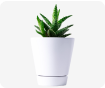
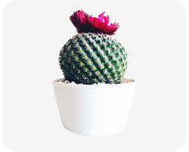

Descubra coisas Incríveis sobre sua planta favorita.
Gasteria Ellaphiae
:cacto

Aloe Squarros
:cacto

Mamilária
Mammillaria é um gênero botânico com 172 espécies da família Cactácea. A maioria das Mamilária é nativa do México. A primeira espécie foi descrita por Carl Linnaeus como Cactos mamilares em 1753...